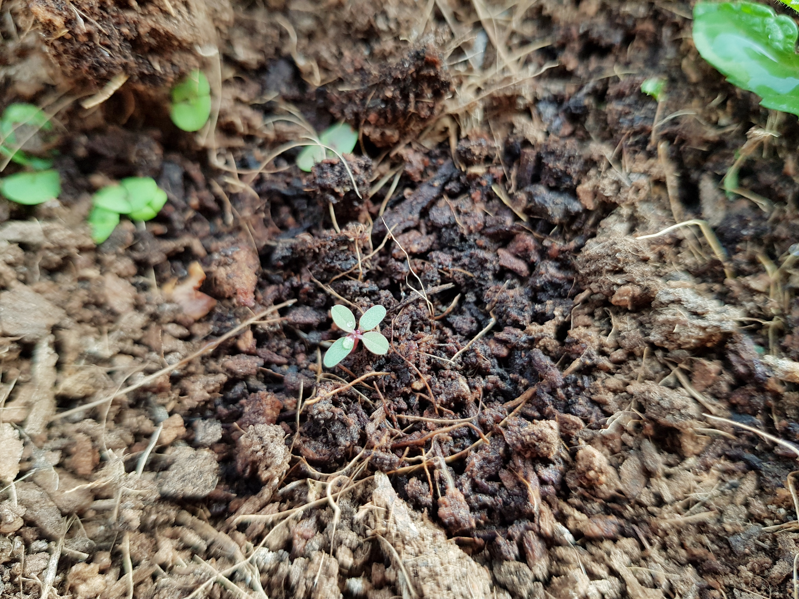
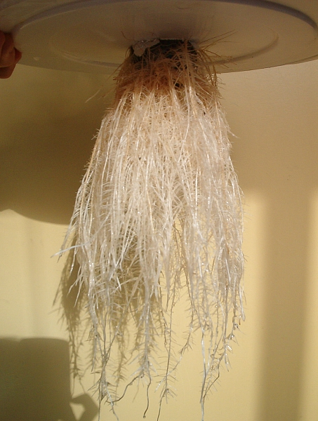
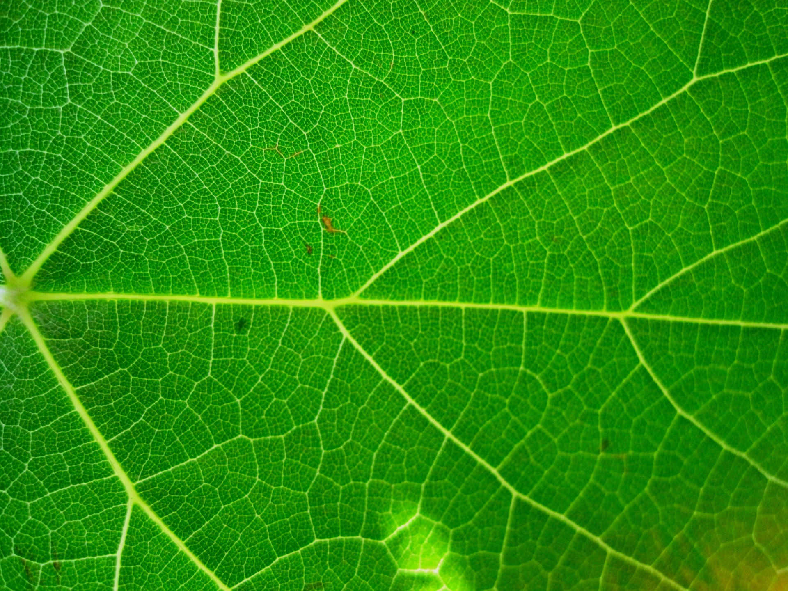

Minerals &
plant growth.
Plants need minerals to grow well. They use them to build roots, stems and leaves.
Minerals are nutrients that plants take in from the soil. Plants also need sunlight, water and air.

Picturesque64 · CC BY-SA 4.0 · cropped view
It starts with
the roots.
Minerals dissolve in water in the soil. Roots take in this water and the minerals.
Tiny root hairs help roots take in more nutrients. The plant moves water and minerals up to its stems and leaves.

Banana patrol · CC BY-SA 3.0
Meet
N, P & K.
Nitrogen, phosphorus and potassium are three important plant nutrients. Each one has a different job.
You may see N, P and K on fertilizer bags. Fertilizer adds nutrients to the soil. Plants need the right amount of each nutrient.

Lynn Greyling · Public domain · cropped view
Nitrogen
Helps leaves and stems grow.
Phosphorus
Supports roots and energy use.
Potassium
Helps plants control water.
Magnesium
helps leaves
stay green.
Magnesium is part of chlorophyll, the green material in leaves. Chlorophyll helps plants use sunlight to make food.
This process is called photosynthesis. Plants use water and carbon dioxide from the air to make sugar. Sugar gives them energy to grow.
Lynn Greyling · Public domain · cropped view
Fewer minerals.
Less growth.
Without enough minerals, plants may grow slowly. Their leaves may turn yellow, and their roots may stay small.
Different missing nutrients cause different problems. Yellow leaves can also be a sign of too much water or too little light.
Picturesque64 · CC BY-SA 4.0 · cropped view
Healthy growth
needs balance.
Healthy plants need sunlight, water, air and the right amount of minerals. More fertilizer is not always better.
Too much fertilizer can harm roots. Follow the instructions on the bag. Good soil and careful watering help plants grow strong.
Picturesque64 · CC BY-SA 4.0 · cropped view